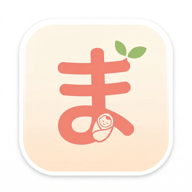

まゆみ助産院
公式アプリ
公式アプリ
スタンプ・お知らせ・メニュー・ショップ
アプリのはじめ方
スマートフォンのカメラで、下のQRコードを読み取ってください。
アプリの入口（ログイン画面）が開きます。

カメラを向けるだけで開きます
iPhone は「カメラ」アプリ、Android は「カメラ」または「Googleレンズ」で。
LINE のQRリーダーで読んだときは、画面のすみの「…」（Android は「︙」）から Safari / Chrome で開き直してください。